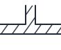

SVGs de fittings de tubulacao
Contact sheet de revisao. Estes assets ainda nao estao conectados ao catalogo P&ID.
Retorno 180°
Cotovelo 90° raio longo
Cotovelo 90° raio curto

Tê (passagem reta)
Saída de tanque
Válvula diafragma
Válvula esfera
Válvula gaveta
Válvula retenção de pé
Válvula agulha
Válvula globo (aberta)
Válvula borboleta
Cotovelo 90° raio médio
Entrada normal
Válvula retenção, leve